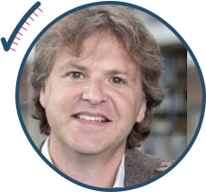

Primary Supervisors

Professor Mark Isalan
Professor of Synthetic Biology
Day-to-day Supervisors
David Miller
Imperial College Advanced Hackspace Fellow
Jure Tica
Postdoctoral Research Associate in Systems & Synthetic Biology
Charles Harris
MSc Bioinformatics & Theoretical Systems Biology
Advisors
Georg Wachter
PhD Candidate, Systems & Synthetic Biology
Aileen Cooney
PhD Candidate, Chemical Engineering
Emily Bennet
PhD Candidate, Systems & Synthetic Biology
Alexis Casas
PhD Candidate, Bioengineering
Dr Suhail A Islam
Centre for Integrative Systems Biology & Bioinformatics
And whether they have taken the time to speak to us or had , a special thanks to:
Jessica E Rowley (Flow Cytometry Facility Manager, Imperial College London)
Serophena C Morgan (Technician, Imperial College London)
Susan E Wryter (Technician, Imperial College London)
Charlotte B Grady (Research Operations Administrator, Imperial College London)
Mike Daniels (Head of Product Management, Evonetix)
Mike Tennant (Principal Teaching Fellow, Imperial College London)
Professor Pietro D Spanu (Professor of Molecular Plant Pathology, Imperial College London)
Professor Guy-Bart Stan (Professor of BioSystems Engineering & Control, Imperial College London)
Professor Christopher Barnes (Professor of Systems and Synthetic Biology, University College London)